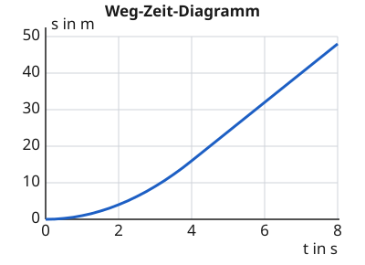
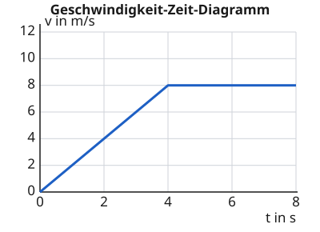

Eine Bewegung im Diagramm darstellen
Mit einem KI-Tutor lernen
Ein KI-Tutor erklärt dir diese Seite und hilft dir bei den Übungen. Wähl deinen Assistenten:
Mit Claude öffnen Mit ChatGPT öffnen Mit Mistral Vibe öffnen
Du nutzt dein eigenes Konto beim Anbieter. Der Assistent ist kein Angebot von lernapps.net: lernapps liefert nur Inhalte und Übungen. Die Wahl gilt für alle Seiten, nur auf diesem Gerät.
Von der Geschichte zum Diagramm
Du kannst beide Diagramme jetzt lesen. Jetzt drehst du es um: Jemand erzählt dir, wie ein Wagen fährt, und du zeichnest dazu das Diagramm. So gehst du vor: Zuerst überlegst du, was der Wagen in jedem Zeitabschnitt macht, ob er schneller wird, gleich schnell bleibt oder langsamer wird. Dann überlegst du, wie die Linie dazu verläuft.
Dieselbe Fahrt in zwei Diagrammen
Ein Fahrrad fährt in 4 Sekunden von 0 auf 8 m/s an und fährt dann weitere 4 Sekunden gleich schnell. Die beiden Bilder zeigen dieselbe Fahrt. Das obere Bild zeigt den Weg, das untere die Geschwindigkeit. Die Zeitachse ist in beiden gleich.

Weg-Zeit-Diagramm der Fahrt. Erst wird der Graph steiler, dann bleibt er gerade.
Quelle: eigene Zeichnung. Lizenz: CC-BY-4.0.
Geschwindigkeit-Zeit-Diagramm derselben Fahrt. Erst steigt die Linie, dann ist sie waagerecht.
Quelle: eigene Zeichnung. Lizenz: CC-BY-4.0.Das siehst du in beiden: Bis 4 s wird das Fahrrad schneller, das zeigt das Weg-Zeit-Diagramm durch den immer steileren Graphen und das Geschwindigkeit-Zeit-Diagramm durch die steigende Linie. Danach fährt es gleich schnell: Der Weg-Zeit-Graph ist gerade, die Geschwindigkeit-Zeit-Linie waagerecht.
Die Durchschnittsgeschwindigkeit
- Durchschnittsgeschwindigkeit
Die Durchschnittsgeschwindigkeit ist der ganze Weg einer Fahrt geteilt durch die ganze Zeit. Sie sagt, wie schnell ein Körper im Mittel war, auch wenn er zwischendurch schneller oder langsamer fuhr.
Beim Fahrrad oben sind es nach 8 s im Weg-Zeit-Diagramm 48 m. Die Durchschnittsgeschwindigkeit ist dann , obwohl das Fahrrad am Anfang langsamer und am Ende schneller war (8 m/s).
Eine Geschichte in ein Diagramm übersetzen
Ein Scooter fährt an, fährt weiter und bremst
Ein Scooter fährt 3 Sekunden lang an bis 5 m/s, fährt 3 Sekunden mit 5 m/s weiter und bremst dann 3 Sekunden bis zum Stillstand. Im Geschwindigkeit-Zeit-Diagramm brauchst du vier Punkte, einen bei 0 s, 3 s, 6 s und 9 s. Bei 0 s steht der Scooter, also 0 m/s. Nach dem Anfahren bei 3 s sind es 5 m/s, bei 6 s immer noch 5 m/s, und nach dem Bremsen bei 9 s wieder 0 m/s. Verbindest du die Punkte, steigt die Linie, ist dann waagerecht und fällt am Ende.
Übung
In der ersten Aufgabe stellst du das Geschwindigkeit-Zeit-Diagramm selbst ein. Die Aufgabe beschreibt eine Fahrt mit drei Zeitabschnitten von je 3 Sekunden. Die vier Regler legen die Geschwindigkeit bei 0, 3, 6 und 9 Sekunden fest. Die Linie verbindet die vier Punkte. Die Zahlen an den Achsen bleiben gleich. Wenn das Diagramm zur Geschichte passt, drückst du „Prüfen“. Eine Abweichung von 1 m/s ist in Ordnung.
Aufgabe Nr. 1
Aufgabe Nr. 1
Ein Wagen fährt 3 s lang mit 4 m/s. Dann bremst er 3 s lang auf 2 m/s ab und fährt die letzten 3 s mit 2 m/s weiter.
Lösung
4 m/s bei 0 s, 4 m/s bei 3 s, 2 m/s bei 6 s, 2 m/s bei 9 s
Übung
Lösung
A
In A steigt die Linie. Der Scooter würde schneller, nicht langsamer.
B richtige Antwort
In B fällt die Linie bis auf null. Der Scooter wird immer langsamer und steht am Ende.
C
In C ist die Linie waagerecht. Der Scooter bliebe gleich schnell.
Abbremsen bis zum Stillstand heißt, dass die Geschwindigkeit bis auf null sinkt. Im Geschwindigkeit-Zeit-Diagramm fällt die Linie.
Mehr dazu:
Übung
Lösung
Richtige Antwort: 4 m/s
Die Durchschnittsgeschwindigkeit ist der ganze Weg durch die ganze Zeit, also 32 m durch 8 s, das sind 4 m/s. Der Wagen war am Anfang schneller und am Ende langsamer.
Mehr dazu: